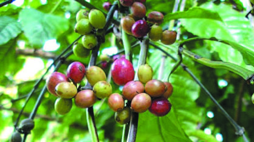

咖啡樹的品種
阿拉比卡咖啡(Arabica coffee)
原產於東非伊索比亞南部的阿比西 尼亞高原，現今沿海尚有野生種。
咖啡樹的品種
羅布斯塔咖啡(Robusta coffee)
羅布斯塔咖啡屬於剛果咖啡的突變 種，原產於西非剛果，本種有缺乏香氣之 憾，苦味較強，酸味不足。
咖啡樹的品種
利比亞咖啡(Liberia coffee)
原產於西非利比亞，本種香味不佳， 苦味較強。除少數生產國自己消費外，只 有歐洲人飲用利比亞咖啡。



咖啡的來源已無從稽考。諸多傳說之一指咖啡原產於衣索比亞（Ethiopia）西南部的咖法省高原地區，據說是一位牧羊人發現羊吃了一種植物後，變得非常興奮活潑，因此發現了咖啡。
原產於東非伊索比亞南部的阿比西 尼亞高原，現今沿海尚有野生種。
羅布斯塔咖啡屬於剛果咖啡的突變 種，原產於西非剛果，本種有缺乏香氣之 憾，苦味較強，酸味不足。
原產於西非利比亞，本種香味不佳， 苦味較強。除少數生產國自己消費外，只 有歐洲人飲用利比亞咖啡。